VIDEO 16:9 • 4K UHD
Vuelo Aéreo
Terreno de 5.200 m² con cabaña renovada lista para habitar, vertiente mayor de agua natural, bosque nativo de canelos y arrayanes, y vista panorámica tanto al mar interior como a la cordillera nevada. Cuenta con camino asfaltado hasta 100 m de la cabaña.
Isla Lemuy, Comuna de Puqueldón, Chiloé • Cabaña renovada lista para disfrutar, vertiente mayor de agua natural, vistas al mar y la cordillera nevada, y camino asfaltado hasta 100 m de la cabaña.
Pase el cursor o pulse sobre cualquier indicador superior para enfocar su ficha técnica.
5.200 m² (0,52 Hectáreas) de topografía suave con una cabaña renovada en el predio. La escala justa para habitar desde el primer día y proyectar quincho, terraza mirador o huerta familiar.
Orientación privilegiada hacia los canales interiores de Chiloé con vista abierta a la cordillera nevada en el horizonte, contemplando amaneceres limpios sobre las islas y montañas del continente.
Subdivisión aprobada por el SAG, Rol individual asignado por el SII e inscripción vigente en el Conservador de Bienes Raíces de Castro. Título 100% bancarizable, libre de gravámenes y gestión directa.
Presencia viva de ejemplares maduros de canelos sagrados, arrayanes, lumas y coigües integrados al predio, conformando un cortaviento biológico natural, aire puro y privacidad visual garantizada.
Posee la vertiente mayor de agua natural viabilizada dentro de este sector, entregando seguridad hídrica continua y pura, complementada con tendido eléctrico accesible para empalme directo.
Conectividad sobresaliente: camino asfaltado hasta 100 metros de la cabaña, transitable todo el año para cualquier automóvil y a minutos del transbordador Chonchi–Lemuy con destino a Castro.
Formatos de video especialmente optimizados: Panorámica 16:9 para pantallas amplias o Reel 9:16 para smartphones. Visualícelos en modo cine in-page sin salir ni abrir nuevas ventanas.
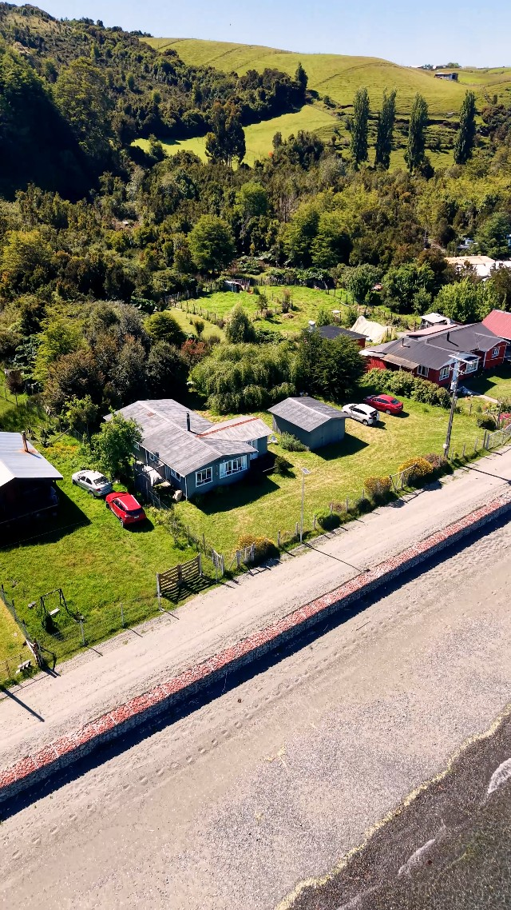
Recorrido vertical inmersivo de la parcela de 5.200 m².
Imágenes reales de la cabaña renovada, las praderas, su vista panorámica al mar interior y a la cordillera nevada. Haga clic en cualquiera de las fotografías para abrir el visor en pantalla completa.
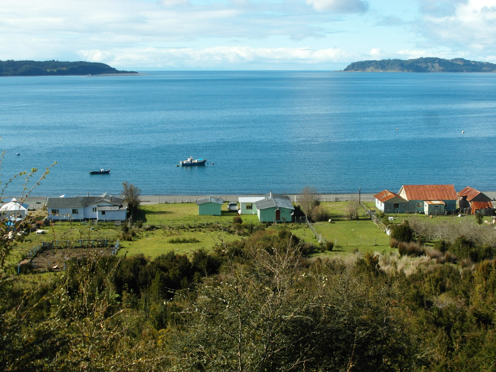
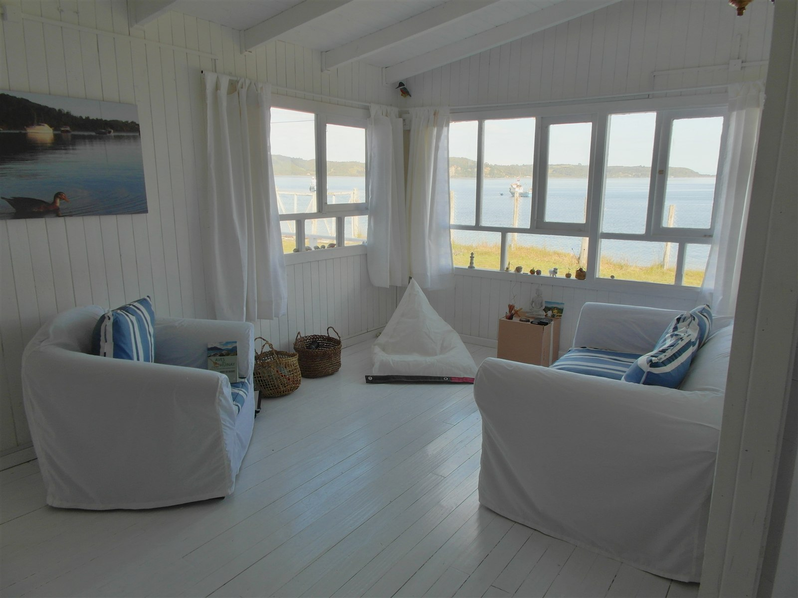
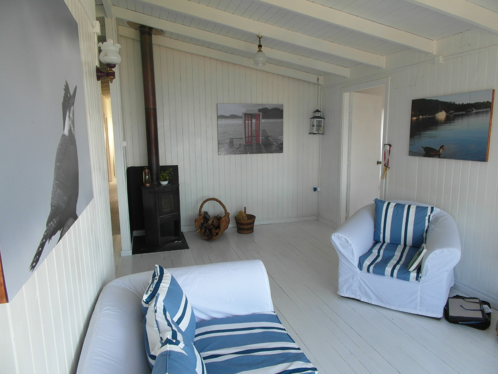
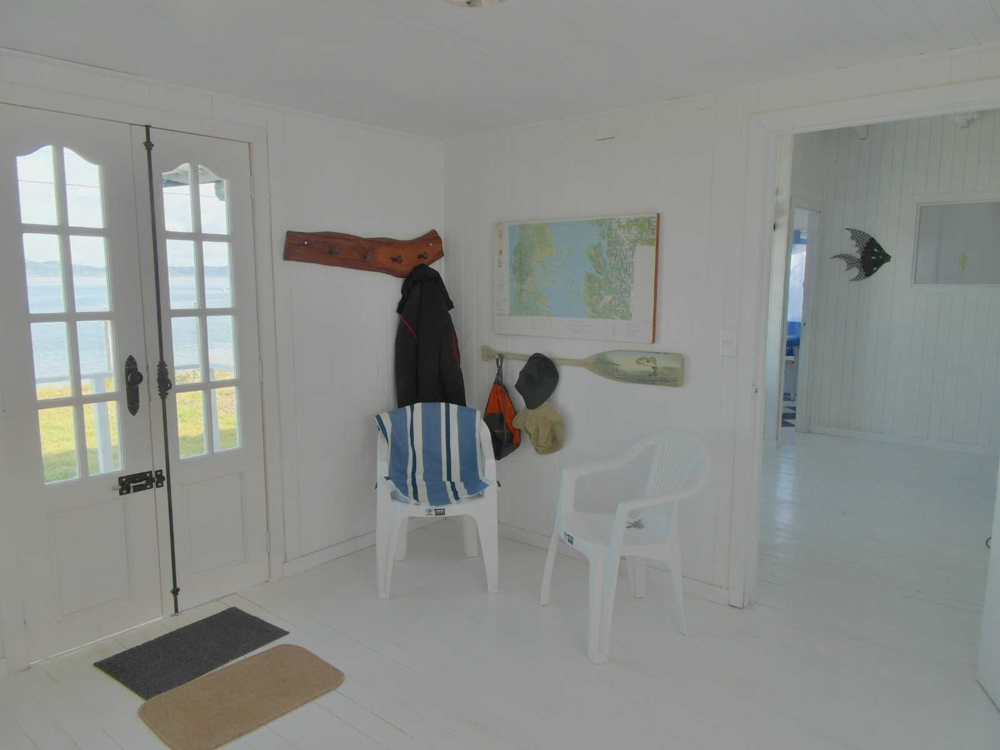
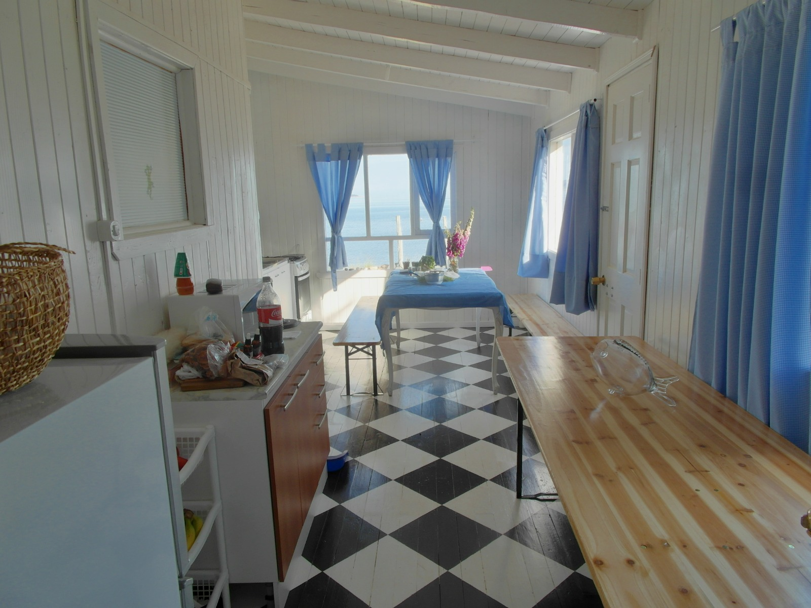
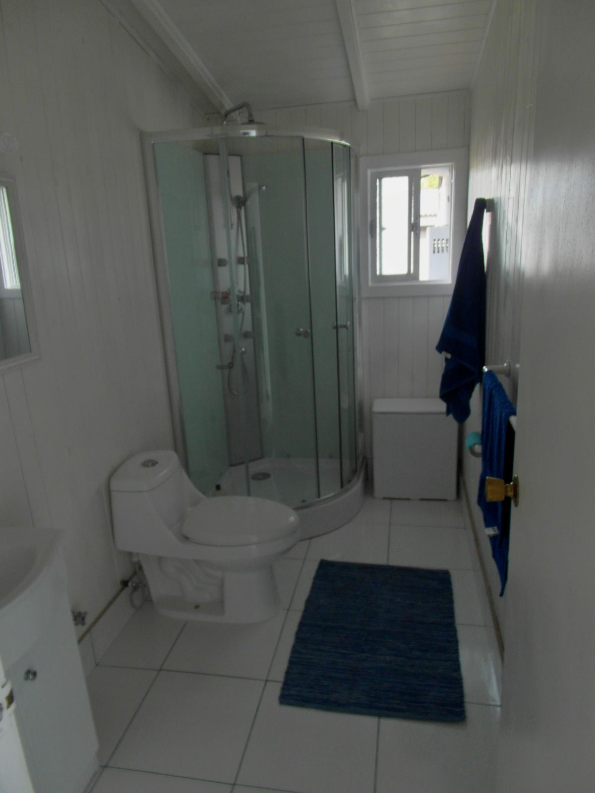
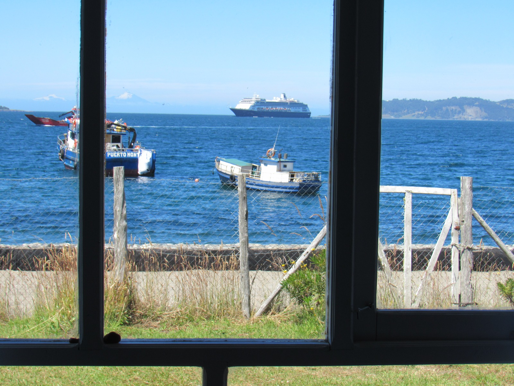
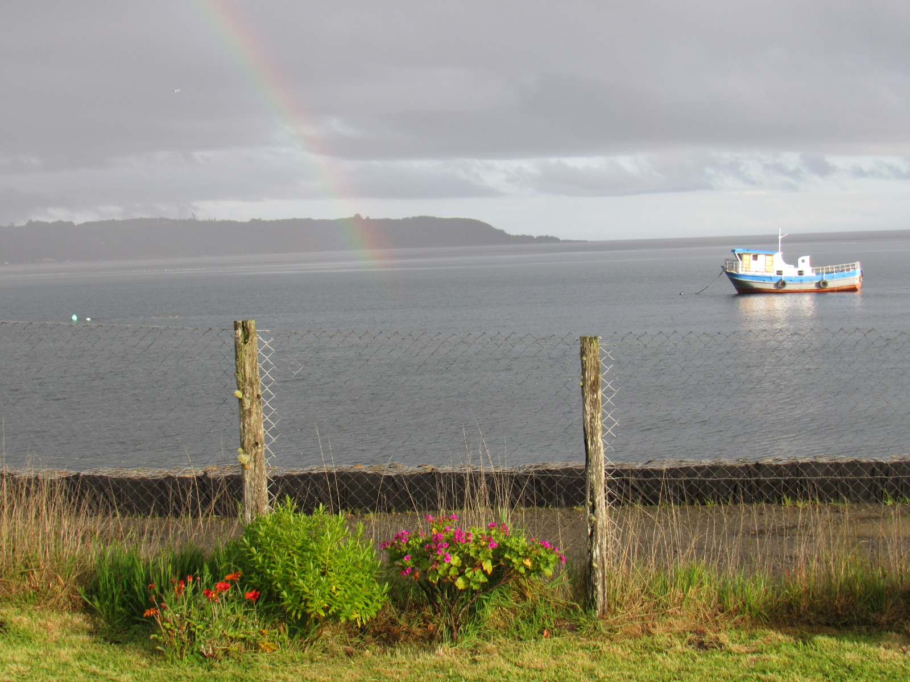
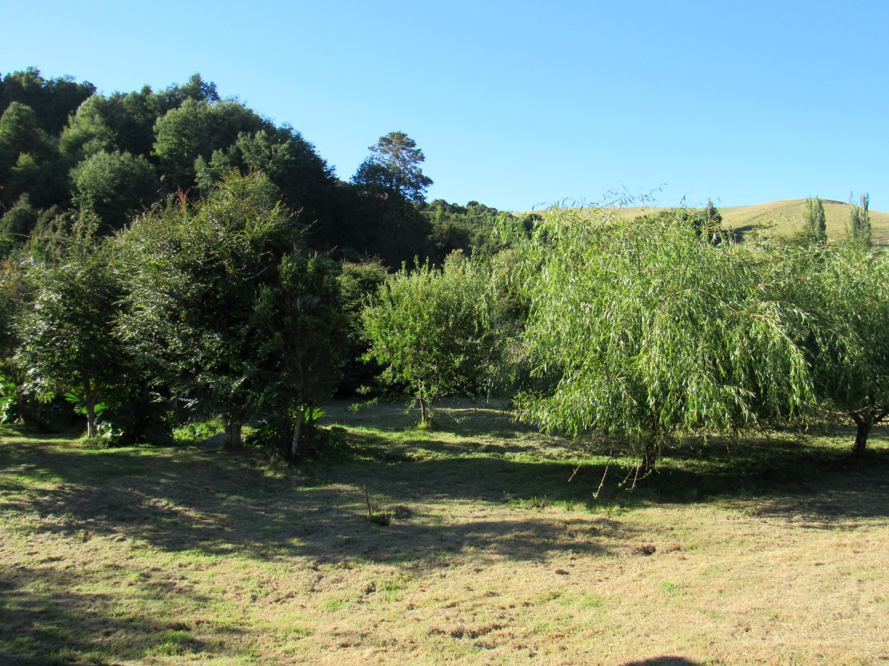
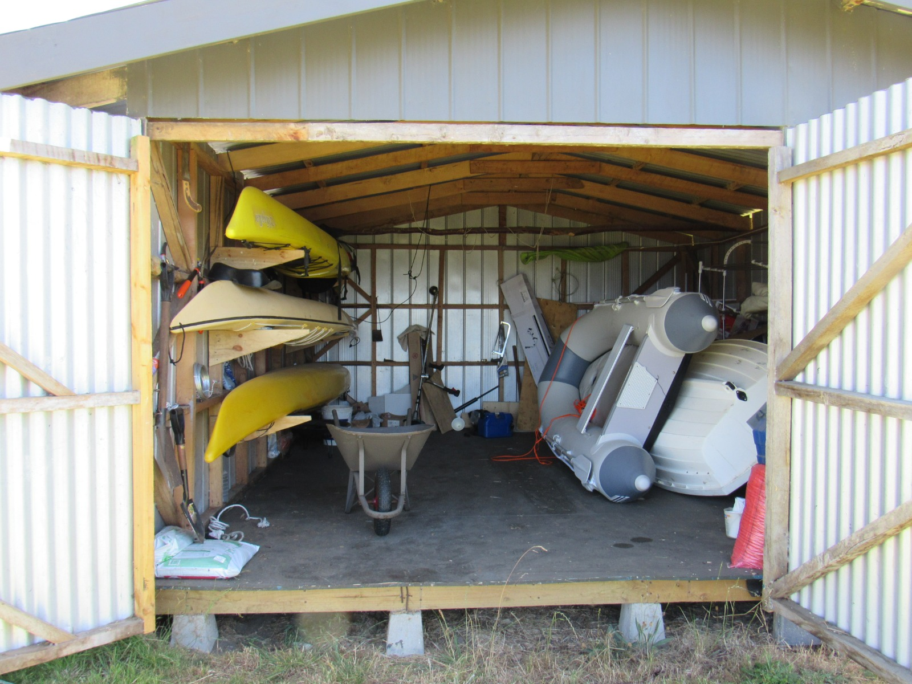
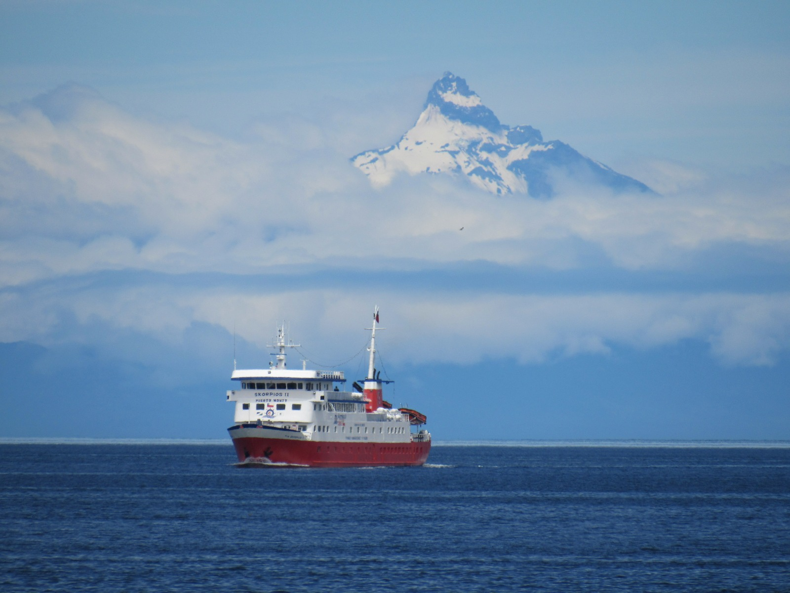
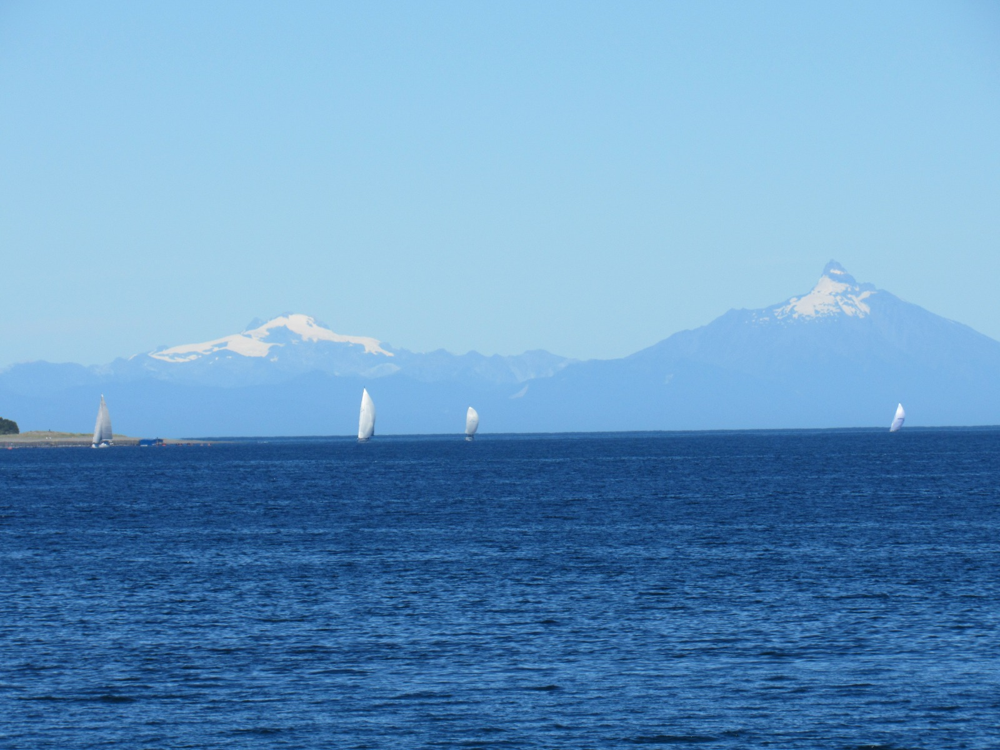
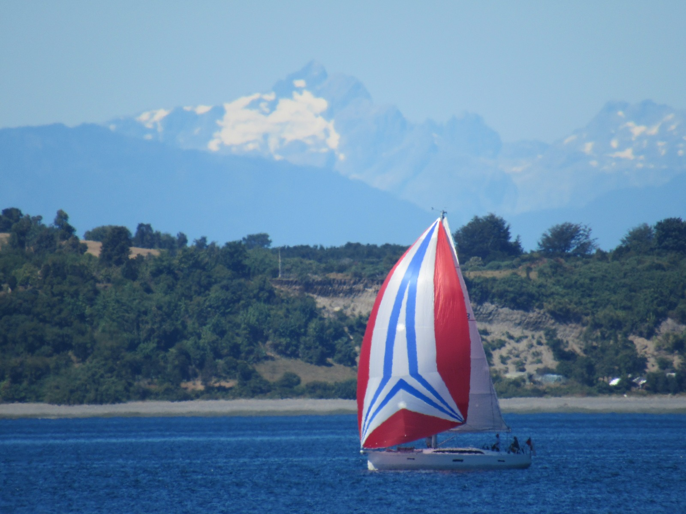
Comuna de Puqueldón, Isla Lemuy • Camino asfaltado hasta 100 m de la cabaña.
Viajar a Isla Lemuy es un trayecto fluido, escénico y garantizado en cualquier estación.
Venta directa sin corretaje ni intermediarios. Solicite el plano de subdivisión SAG, rol de avalúo y coordine una visita guiada en terreno.
Gestión directa sin intermediarios • Escritura pública de compraventa en Notaría con fondos resguardados en Vale Vista.